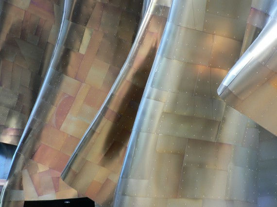

47 Surface Area
#| output: false
#| echo: false
## Formatting options are included here; not in CalculusWithJulia.WeaveSupport
using QuizQuestions
nothing#| output: false
#| echo: false
fig_size=(800, 600)
nothing#| output: false
#| echo: false
import Logging
Logging.disable_logging(Logging.Info) # or e.g. Logging.Info
Logging.disable_logging(Logging.Warn)
nothing#| eval: false
#| echo: false
import SymPy
function Base.show(io::IO, ::MIME"text/html", x::T) where {T <: SymPy.SymbolicObject}
println(io, "<span class=\"math-left-align\" style=\"padding-left: 4px; width:0; float:left;\"> ")
println(io, "\\[")
println(io, sympy.latex(x))
println(io, "\\]")
println(io, "</span>")
end
#| output: false
#| echo: false
# ImageFile
## WeaveSupport from CalculusWithJulia package
## moved here to lighten up CwJ package
import Base64: base64encode
import Markdown
using Mustache
using Tables
# q and L
using LaTeXStrings
macro q_str(x)
"`$x`"
end
"""
Take an image file and encode it
## Examples
ImageFile("http://...", "caption")
ImageFile("/fullpath/to_file/", "caption")
ImageFile(:integrals, "figures/pic.png", "caption")
ImageFile(p, "caption") # p a Plot object
"""
mutable struct ImageFile
f
caption
alt
width
content
end
# 2 args f, caption
ImageFile(f,caption=""; alt="A Figure", width=nothing) = ImageFile(f, caption, alt, width)
# 3 args dir, f, caption
function ImageFile(dir::Symbol, f::AbstractString, caption;
alt="A Figure", width=nothing)
basedir = replace(dirname(@__DIR__), "/src" => "")
#fname = joinpath(basedir, "CwJ", string(dir), f)
fname = joinpath(basedir, string(dir), f)
ImageFile(fname, caption, alt, width)
end
# plot -> string for file
function ImageFile(f, caption, alt, width)
imgfile = tempname() * ".gif"
io = open(imgfile, "w")
show(io, "image/png", f)
close(io)
ImageFile(imgfile, caption, alt, width)
end
gif_to_img_tpl = Mustache.mt"""
<img src="data:image/gif;base64,{{{:data}}}" class="card-img-top" alt="{{{:alt}}}">
"""
function ImageFile(f::AbstractString, caption, alt, width)
fcontent = occursin(r"^http", f) ? read(download(f), String) : read(f, String)
data = base64encode(fcontent)
content = Mustache.render(gif_to_img_tpl, data=data, alt=alt)
ImageFile(f, caption, alt, width, content)
end
function Base.show(io::IO, m::MIME"text/html", x::ImageFile)
content = x.content
if content == nothing
data = (read(x.f, String))
content = gif_to_image(data=data, alt="figure")
end
caption = (Markdown.html ∘ Markdown.parse)(x.caption)
print(io, """<div class="d-flex justify-content-center">""")
print(io, " <figure>")
print(io, content)
print(io, " <figcaption>")
print(io, caption)
print(io, """
</figcaption>
</figure>
</div>
""")
end
import TextWrap
function Base.show(io::IO, m::MIME"text/plain", x::ImageFile)
caption = (TextWrap.wrap ∘ Markdown.plain ∘ Markdown.parse)(x.caption)
println(io, """
---------------------------------
|
| see online version for |
| image |
| |
--------------------------------
""")
println(io, caption)
return nothing
end
# hack to work around issue
# import Markdown
# import CalculusWithJulia
# function CalculusWithJulia.WeaveSupport.ImageFile(d::Symbol, f::AbstractString, caption; kwargs...)
# nm = joinpath("..", string(d), f)
# u = ""
# Markdown.parse(u)
# end
# Table
#| echo: false
#https://github.com/TheRoniOne/MDTable.jl/blob/master/src/write.jl
function MDTable(io::IO, df)
rows = Tables.rows(df)
sch = Tables.schema(rows)
names = Tables.columnnames(rows)
header = true
headers::String = ""
for i in 1:length(names)
if i != length(names)
headers = headers * "| $(names[i]) "
else
headers = headers * "| $(names[i]) " * "|\n"
end
end
print(io, headers)
println(io, "| --- " ^ length(names) * "|")
for row in rows
line::String = ""
Tables.eachcolumn(sch, row) do val, i, nm
print(io, "| ", chomp(string(val)))
end
println(io, "|")
end
end
Table(d) = Markdown.parse(sprint(io -> MDTable(io, d)))
table(d) = Table(d)
# HTMLoutput
struct HTMLoutput
x
centered::Bool
caption::String
HTMLoutput(x; centered::Bool=false, caption::String="") = new(x, centered, caption)
end
function Base.show(io::IO, ::MIME"text/html", x::HTMLoutput)
if !x.centered
txt = x.x
else
centered_content_tpl = """
<div class="d-flex justify-content-center">
<div class="card border-light mx-3 px-3 my-3 py-3" style="{{#:width}}width={{:width}}px{{/:width}}{{^:width}} max-width: 560px;{{/:width}}">
{{{:content}}}
<div class="card-footer text-muted">
{{{:caption}}}
</div>
</div>
</div>
"""
txt = Mustache.render(centered_content_tpl; content=x.x, caption=x.caption)
end
print(io, txt)
end
function Base.show(io::IO, m::MIME"text/plain", x::HTMLoutput)
caption = (TextWrap.wrap ∘ Markdown.plain ∘ Markdown.parse)(x.caption)
println(io, "Content available in online version")
println(io, caption)
return nothing
end
nothingThis section uses these add-on packages:
using CalculusWithJulia
using Plots
plotly()
using SymPy
using QuadGK47.1 Surfaces of revolution
#| hold: true
#| echo: false
imgfile = "figures/gehry-hendrix.jpg"
caption = """
The exterior of the Jimi Hendrix Museum in Seattle has the signature
style of its architect Frank Gehry. The surface is comprised of
patches. A general method to find the amount of material to cover the
surface - the surface area - might be to add up the area of *each* of the
patches. However, in this section we will see for surfaces of
revolution, there is an easier way. (Photo credit to
[firepanjewellery](http://firepanjewellery.com/).)
"""
# ImageFile(:integrals, imgfile, caption)
nothing
The surface area generated by rotating the graph of \(f(x)\) between \(a\) and \(b\) about the \(x\)-axis is given by the integral
\[ \int_a^b 2\pi f(x) \cdot \sqrt{1 + f'(x)^2} dx. \]
If the curve is parameterized by \((g(t), f(t))\) between \(a\) and \(b\) then the surface area is
\[ \int_a^b 2\pi f(t) \cdot \sqrt{g'(t)^2 + f'(t)^2} dx. \]
These formulas do not add in the surface area of either of the ends.
#| hold: true
#| echo: false
F₀(u,v) = [u, u*cos(v), u*sin(v)] # a cone
us = range(0, 1, length=25)
vs = range(0, 2pi, length=25)
ws = unzip(F₀.(us, vs')) # make square
surface(ws..., legend=false)
plot!([-0.5,1.5], [0,0],[0,0])The above figure shows a cone (the line \(y=x\)) presented as a surface of revolution about the \(x\)-axis.
To see why this formula is as it is, we look at the parameterized case, the first one being a special instance with \(g(t) =t\).
Let a partition of \([a,b]\) be given by \(a = t_0 < t_1 < t_2 < \cdots < t_n =b\). This breaks the curve into a collection of line segments. Consider the line segment connecting \((g(t_{i-1}), f(t_{i-1}))\) to \((g(t_i), f(t_i))\). Rotating this around the \(x\) axis will generate something approximating a disc, but in reality will be the frustum of a cone. What will be the surface area?
Consider a right-circular cone parameterized by an angle \(\theta\) and the largest radius \(r\) (so that the height satisfies \(r/h=\tan(\theta)\)). If this cone were made of paper, cut up a side, and laid out flat, it would form a sector of a circle, whose area would be \(R^2\gamma/2\) where \(R\) is the radius of the circle (also the side length of our cone), and \(\gamma\) an angle that we can figure out from \(r\) and \(\theta\). To do this, we note that the arc length of the circle’s edge is \(R\gamma\) and also the circumference of the bottom of the cone so \(R\gamma = 2\pi r\). With all this, we can solve to get \(A = \pi r^2/\sin(\theta)\). But we have a frustum of a cone with radii \(r_0\) and \(r_1\), so the surface area is a difference: \(A = \pi (r_1^2 - r_0^2) /\sin(\theta)\).
Relating this to our values in terms of \(f\) and \(g\), we have \(r_1=f(t_i)\), \(r_0 = f(t_{i-1})\), and \(\sin(\theta) = \Delta f / \sqrt{(\Delta g)^2 + (\Delta f)^2}\), where \(\Delta f = f(t_i) - f(t_{i-1})\) and similarly for \(\Delta g\).
Putting this altogether we get that the surface area generarated by rotating the line segment around the \(x\) axis is
\[ \text{sa}_i = \pi (f(t_i)^2 - f(t_{i-1})^2) \cdot \sqrt{(\Delta g)^2 + (\Delta f)^2} / \Delta f = \pi (f(t_i) + f(t_{i-1})) \cdot \sqrt{(\Delta g)^2 + (\Delta f)^2}. \]
(This is \(2 \pi\) times the average radius times the slant height.)
As was done in the derivation of the formula for arc length, these pieces are multiplied both top and bottom by \(\Delta t = t_{i} - t_{i-1}\). Carrying the bottom inside the square root and noting that by the mean value theorem \(\Delta g/\Delta t = g'(\xi)\) and \(\Delta f/\Delta t = f'(\psi)\) for some \(\xi\) and \(\psi\) in \([t_{i-1}, t_i]\), this becomes:
\[ \text{sa}_i = \pi (f(t_i) + f(t_{i-1})) \cdot \sqrt{(g'(\xi))^2 + (f'(\psi))^2} \cdot (t_i - t_{i-1}). \]
Adding these up, \(\text{sa}_1 + \text{sa}_2 + \cdots + \text{sa}_n\), we get a Riemann sum approximation to the integral
\[ \text{SA} = \int_a^b 2\pi f(t) \sqrt{g'(t)^2 + f'(t)^2} dt. \]
If we assume integrability of the integrand, then as our partition size goes to zero, this approximate surface area converges to the value given by the limit. (As with arc length, this needs a technical adjustment to the Riemann integral theorem as here we are evaluating the integrand function at four points (\(t_i\), \(t_{i-1}\), \(\xi\) and \(\psi\)) and not just at some \(c_i\). An figure appears at the end.
Examples
Lets see that the surface area of an open cone follows from this formula, even though we just saw how to get this value.
A cone can be envisioned as rotating the function \(f(x) = x\tan(\theta)\) between \(0\) and \(h\) around the \(x\) axis. This integral yields the surface area:
\[\begin{align*} \int_0^h 2\pi f(x) \sqrt{1 + f'(x)^2}dx &= \int_0^h 2\pi x \tan(\theta) \sqrt{1 + \tan(\theta)^2}dx \\ &= (2\pi\tan(\theta)\sqrt{1 + \tan(\theta)^2}) x^2/2 \big|_0^h \\ &= \pi \tan(\theta) \sec(\theta) h^2 \\ &= \pi r^2 / \sin(\theta). \end{align*}\]
(There are many ways to express this, we used \(r\) and \(\theta\) to match the work above. If the cone is parameterized by a height \(h\) and radius \(r\), then the surface area of the sides is \(\pi r\sqrt{h^2 + r^2}\). If the base is included, there is an additional \(\pi r^2\) term.)
Example
Let the graph of \(f(x) = x^2\) from \(x=0\) to \(x=1\) be rotated around the \(x\) axis. What is the resulting surface area generated?
\[ \text{SA} = \int_a^b 2\pi f(x) \sqrt{1 + f'(x)^2}dx = \int_0^1 2\pi x^2 \sqrt{1 + (2x)^2} dx. \]
This integral is done by a trig substitution, but gets involved. We let SymPy do it:
@syms x
F = integrate(2 * PI * x^2 * sqrt(1 + (2x)^2), x)We show F, only to demonstrate that indeed the integral is a bit involved. The actual surface area follows from a definite integral, which we get through the fundamental theorem of calculus:
F(1) - F(0)47.1.1 Plotting surfaces of revolution
The commands to plot a surface of revolution will be described more clearly later; for now we present them as simply a pattern to be followed in case plots are desired. Suppose the curve in the \(x-y\) plane is given parametrically by \((g(u), f(u))\) for \(a \leq u \leq b\).
To be concrete, we parameterize the circle centered at \((6,0)\) with radius \(2\) by:
g(u) = 6 + 2sin(u)
f(u) = 2cos(u)
a, b = 0, 2piThe plot of this curve is:
#| hold: true
us = range(a, b, length=100)
plot(g.(us), f.(us), xlims=(-0.5, 9), aspect_ratio=:equal, legend=false)
plot!([0,0],[-3,3], color=:red, linewidth=5) # y axis emphasis
plot!([3,9], [0,0], color=:green, linewidth=5) # x axis emphasisThough parametric plots have a convenience constructor, plot(g, f, a, b), we constructed the points with Julia’s broadcasting notation, as we will need to do for a surface of revolution. The xlims are adjusted to show the \(y\) axis, which is emphasized with a layered line. The line is drawn by specifying two points, \((x_0, y_0)\) and \((x_1, y_1)\) in the form [x0,x1] and [y0,y1].
Now, to rotate this about the \(y\) axis, creating a surface plot, we have the following pattern:
S(u,v) = [g(u)*cos(v), g(u)*sin(v), f(u)]
us = range(a, b, length=100)
vs = range(0, 2pi, length=100)
ws = unzip(S.(us, vs')) # reorganize data
surface(ws..., zlims=(-6,6), legend=false)
plot!([0,0], [0,0], [-3,3], color=:red, linewidth=5) # y axis emphasisThe unzip function is not part of base Julia, rather part of CalculusWithJulia. This function rearranges data into a form consumable by the plotting methods like surface. In this case, the result of S.(us,vs') is a grid (matrix) of points, the result of unzip is three grids of values, one for the \(x\) values, one for the \(y\) values, and one for the \(z\) values. A manual adjustment to the zlims is used, as aspect_ratio does not have an effect with the plotly() backend and errors on 3d graphics with pyplot().
To rotate this about the \(x\) axis, we have this pattern:
#| hold: true
S(u,v) = [g(u), f(u)*cos(v), f(u)*sin(v)]
us = range(a, b, length=100)
vs = range(0, 2pi, length=100)
ws = unzip(S.(us,vs'))
surface(ws..., legend=false)
plot!([3,9], [0,0],[0,0], color=:green, linewidth=5) # x axis emphasisThe above pattern covers the case of rotating the graph of a function \(f(x)\) of \(a,b\) by taking \(g(t)=t\).
Example
Rotate the graph of \(x^x\) from \(0\) to \(3/2\) around the \(x\) axis. What is the surface area generated?
We work numerically for this one, as no antiderivative is forthcoming. Recall, the accompanying CalculusWithJulia package defines f' to return the automatic derivative through the ForwardDiff package.
#| hold: true
f(x) = x^x
a, b = 0, 3/2
val, _ = quadgk(x -> 2pi * f(x) * sqrt(1 + f'(x)^2), a, b)
val(The function is not defined at \(x=0\) mathematically, but is on the computer to be \(1\), the limiting value. Even were this not the case, the quadgk function doesn’t evaluate the function at the points a and b that are specified.)
#| hold: true
g(u) = u
f(u) = u^u
S(u,v) = [g(u), f(u)*cos(v), f(u)*sin(v)]
us = range(0, 3/2, length=100)
vs = range(0, pi, length=100) # not 2pi (to see inside)
ws = unzip(S.(us,vs'))
surface(ws..., alpha=0.75)We compare this answer to that of the frustum of a cone with radii \(1\) and \((3/2)^2\), formed by rotating the line segment connecting \((0,f(0))\) with \((3/2,f(3/2))\). From looking at the graph of the surface, these values should be comparable. The surface area of the cone part is \(\pi (r_1^2 + r_0^2) / \sin(\theta) = \pi (r_1 + r_0) \cdot \sqrt{(\Delta h)^2 + (r_1-r_0)^2}\).
#| hold: true
f(x) = x^x
r0, r1 = f(0), f(3/2)
pi * (r1 + r0) * sqrt((3/2)^2 + (r1-r0)^2)Example
What is the surface area generated by Gabriel’s Horn, the solid formed by rotating \(1/x\) for \(x \geq 1\) around the \(x\) axis?
\[ \text{SA} = \int_a^b 2\pi f(x) \sqrt{1 + f'(x)^2}dx = \lim_{M \rightarrow \infty} \int_1^M 2\pi \frac{1}{x} \sqrt{1 + (-1/x^2)^2} dx. \]
We do this with SymPy:
@syms M
ex = integrate(2PI * (1/x) * sqrt(1 + (-1/x)^2), (x, 1, M))The limit as \(M\) gets large is of interest. The only term that might get out of hand is asinh(M). We check its limit:
limit(asinh(M), M => oo)So indeed it does. There is nothing to balance this out, so the integral will be infinite, as this shows:
limit(ex, M => oo)This figure would have infinite surface, were it possible to actually construct an infinitely long solid. (But it has been shown to have finite volume.)
Example
The curve described parametrically by \(g(t) = 2(1 + \cos(t))\cos(t)\) and \(f(t) = 2(1 + \cos(t))\sin(t)\) from \(0\) to \(\pi\) is rotated about the \(x\) axis. Find the resulting surface area.
The graph shows half a heart, the resulting area will resemble an apple.
#| hold: true
g(t) = 2(1 + cos(t)) * cos(t)
f(t) = 2(1 + cos(t)) * sin(t)
plot(g, f, 0, 1pi)The integrand simplifies to \(8\sqrt{2}\pi \sin(t) (1 + \cos(t))^{3/2}\). This lends itself to \(u\)-substitution with \(u=\cos(t)\).
\[\begin{align*} \int_0^\pi 8\sqrt{2}\pi \sin(t) (1 + \cos(t))^{3/2} &= 8\sqrt{2}\pi \int_1^{-1} (1 + u)^{3/2} (-1) du\\ &= 8\sqrt{2}\pi (2/5) (1+u)^{5/2} \big|_{-1}^1\\ &= 8\sqrt{2}\pi (2/5) 2^{5/2} = \frac{2^7 \pi}{5}. \end{align*}\]
47.2 The first Theorem of Pappus
The first theorem of Pappus provides a simpler means to compute the surface area if the distance the centroid is from the axis (\(\rho\)) and the arc length of the curve (\(L\)) are both known. In that case, the surface area satisfies:
\[ \text{SA} = 2 \pi \rho L \]
That is, the surface area is simply the circumference of the circle traced out by the centroid of the curve times the length of the curve - the distances rotated are collapsed to that of just the centroid.
Example
The surface area of of an open cone can be computed, as the arc length is \(\sqrt{h^2 + r^2}\) and the centroid of the line is a distance \(r/2\) from the axis. This gives SA\(=2\pi (r/2) \sqrt{h^2 + r^2} = \pi r \sqrt{h^2 + r^2}\).
Example
We can get the surface area of a torus from this formula.
The torus is found by rotating the curve \((x-b)^2 + y^2 = a^2\) about the \(y\) axis. The centroid is \(b\), the arc length \(2\pi a\), so the surface area is \(2\pi (b) (2\pi a) = 4\pi^2 a b\).
A torus with \(a=2\) and \(b=6\)
#| hold: true
#| echo: false
a,b = 2, 6
F₀(u,v) = [a*(cos(u) + b)*cos(v), a*(cos(u) + b)*sin(v), a*sin(u)]
us = vs = range(0, 2pi, length=35)
ws = unzip(F₀.(us, vs'))
surface(ws..., legend=false, zlims=(-12,12))Example
The surface area of sphere will be SA\(=2\pi \rho (\pi r) = 2 \pi^2 r \cdot \rho\). What is \(\rho\)? The centroid of an arc formula can be derived in a manner similar to that of the centroid of a region. The formulas are:
\[\begin{align*} \text{cm}_x &= \frac{1}{L} \int_a^b g(t) \sqrt{g'(t)^2 + f'(t)^2} dt\\ \text{cm}_y &= \frac{1}{L} \int_a^b f(t) \sqrt{g'(t)^2 + f'(t)^2} dt. \end{align*}\]
Here, \(L\) is the arc length of the curve.
For the sphere parameterized by \(g(t) = r \cos(t)\), \(f(t) = r\sin(t)\), we get that these become
\[ \text{cm}_x = \frac{1}{L}\int_0^\pi r\cos(t) \sqrt{r^2(\sin(t)^2 + \cos(t)^2)} dt = \frac{1}{L}r^2 \int_0^\pi \cos(t) = 0. \]
\[ \text{cm}_y = \frac{1}{L}\int_0^\pi r\sin(t) \sqrt{r^2(\sin(t)^2 + \cos(t)^2)} dt = \frac{1}{L}r^2 \int_0^\pi \sin(t) = \frac{1}{\pi r} r^2 \cdot 2 = \frac{2r}{\pi}. \]
Combining this, we see that the surface area of a sphere is \(2 \pi^2 r (2r/\pi) = 4\pi r^2\), by Pappus’ Theorem.
47.3 Questions
Questions
The graph of \(f(x) = \sin(x)\) from \(0\) to \(\pi\) is rotated around the \(x\) axis. After a \(u\)-substitution, what integral would give the surface area generated?
#| hold: true
#| echo: false
choices = [
"``-\\int_1^{-1} 2\\pi \\sqrt{1 + u^2} du``",
"``-\\int_1^{_1} 2\\pi u \\sqrt{1 + u^2} du``",
"``-\\int_1^{_1} 2\\pi u^2 \\sqrt{1 + u} du``"
]
answ = 1
radioq(choices, answ)Though the integral can be computed by hand, give a numeric value.
#| hold: true
#| echo: false
f(x) = sin(x)
a, b = 0, pi
val, _ = quadgk(x -> 2pi* f(x) * sqrt(1 + f'(x)^2), a, b)
numericq(val)Questions
The graph of \(f(x) = \sqrt{x}\) from \(0\) to \(4\) is rotated around the \(x\) axis. Numerically find the surface area generated?
#| hold: true
#| echo: false
f(x) = sqrt(x)
a, b = 0, 4
val, _ = quadgk(x -> 2pi* f(x) * sqrt(1 + f'(x)^2), a, b)
numericq(val)Questions
Find the surface area generated by revolving the graph of the function \(f(x) = x^3/9\) from \(x=0\) to \(x=2\) around the \(x\) axis. This can be done by hand or numerically.
#| hold: true
#| echo: false
f(x) = x^3/9
a, b = 0, 2
val, _ = quadgk(x -> 2pi* f(x) * sqrt(1 + f'(x)^2), a, b)
numericq(val)Questions
(From Stewart.) If a loaf of bread is in the form of a sphere of radius \(1\), the amount of crust for a slice depends on the width, but not where in the loaf it is sliced.
That is this integral with \(f(x) = \sqrt{1 - x^2}\) and \(u, u+h\) in \([-1,1]\) does not depend on \(u\):
\[ A = \int_u^{u+h} 2\pi f(x) \sqrt{1 + f'(x)^2} dx. \]
If we let \(f(x) = y\) then \(f'(x) = -x/y\). With this, what does the integral above come down to after cancellations:
#| hold: true
#| echo: false
choices = [
"``\\int_u^{u+h} 2\\pi dx``",
"``\\int_u^{u_h} 2\\pi y dx``",
"``\\int_u^{u_h} 2\\pi x dx``"
]
answ = 1
radioq(choices, answ)Questions
Find the surface area of the dome of sphere generated by rotating the the curve generated by \(g(t) = \cos(t)\) and \(f(t) = \sin(t)\) for \(t\) in \(0\) to \(\pi/6\).
Numerically find the value.
#| hold: true
#| echo: false
g(t) = cos(t)
f(t) = sin(t)
a, b = 0, pi/6
val, _ = quadgk(t -> 2pi* f(t) * sqrt(g'(t)^2 + f'(t)^2), a, b)
numericq(val)Questions
The astroid is parameterized by \(g(t) = a\cos(t)^3\) and \(f(t) = a \sin(t)^3\). Let \(a=1\) and rotate the curve from \(t=0\) to \(t=\pi\) around the \(x\) axis. What is the surface area generated?
#| hold: true
#| echo: false
g(t) = cos(t)^3
f(t) = sin(t)^3
a, b = 0, pi
val, _ = quadgk(t -> 2pi* f(t) * sqrt(g'(t)^2 + f'(t)^2), a, b)
numericq(val)Questions
For the curve parameterized by \(g(t) = a\cos(t)^5\) and \(f(t) = a \sin(t)^5\). Let \(a=1\) and rotate the curve from \(t=0\) to \(t=\pi\) around the \(x\) axis. Numerically find the surface area generated?
#| hold: true
#| echo: false
g(t) = cos(t)^5
f(t) = sin(t)^5
a, b = 0, pi
val, _ = quadgk(t -> 2pi* f(t) * sqrt(g'(t)^2 + f'(t)^2), a, b)
numericq(val)48 Appendix
#| hold: true
#| echo: false
gr()
## For **some reason** having this in the natural place messes up the plots.
## {{{approximate_surface_area}}}
xs,ys = range(-1, stop=1, length=50), range(-1, stop=1, length=50)
f(x,y)= 2 - (x^2 + y^2)
dr = [1/2, 3/4]
df = [f(dr[1],0), f(dr[2],0)]
function sa_approx_graph(i)
p = plot(xs, ys, f, st=[:surface], legend=false)
for theta in range(0, stop=i/10*2pi, length=10*i )
path3d!(p,sin(theta)*dr, cos(theta)*dr, df)
end
p
end
n = 10
anim = @animate for i=1:n
sa_approx_graph(i)
end
imgfile = tempname() * ".gif"
gif(anim, imgfile, fps = 1)
caption = L"""
Surface of revolution of $f(x) = 2 - x^2$ about the $y$ axis. The lines segments are the images of rotating the secant line connecting $(1/2, f(1/2))$ and $(3/4, f(3/4))$. These trace out the frustum of a cone which approximates the corresponding surface area of the surface of revolution. In the limit, this approximation becomes exact and a formula for the surface area of surfaces of revolution can be used to compute the value.
"""
plotly()
ImageFile(imgfile, caption)